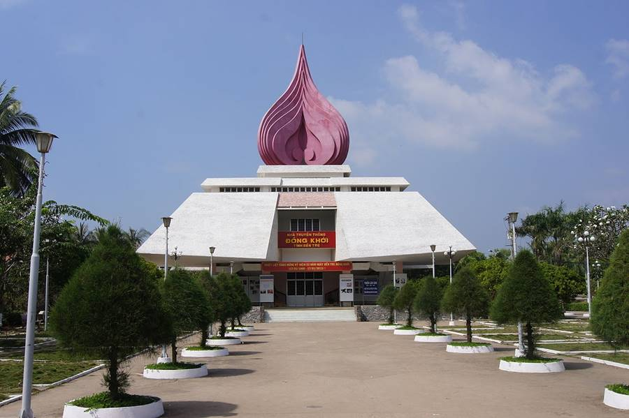
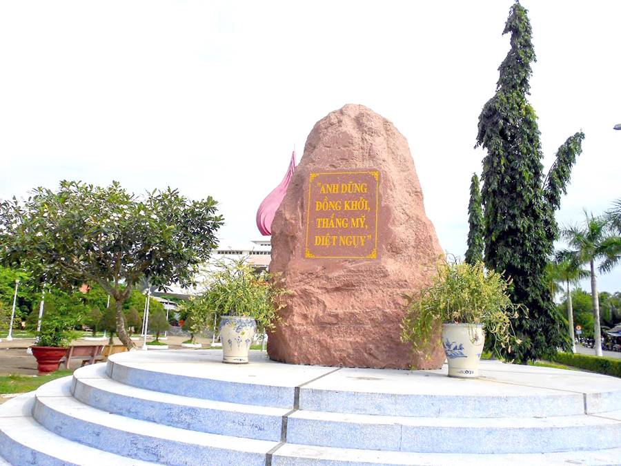
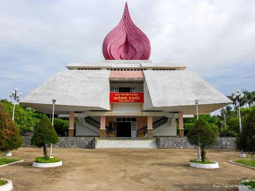
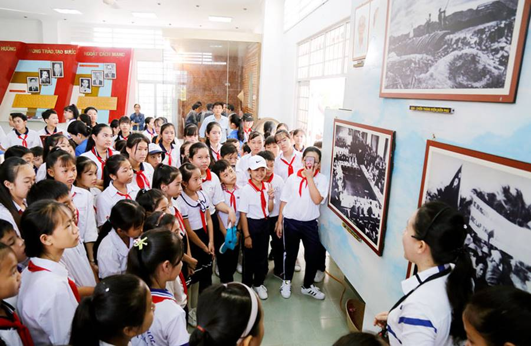
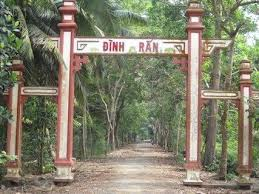
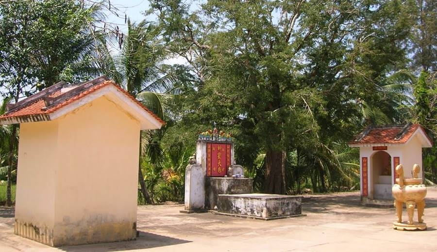
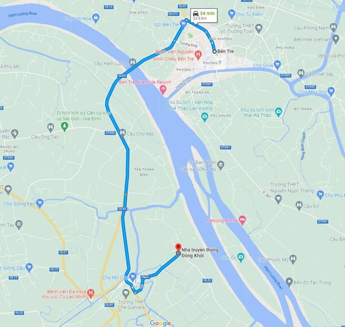

Khu di tích Đồng Khởi Bến Tre là nơi ghi dấu lịch sử cách mạng hào hùng của dân tộc ta trong những năm kháng chiến chống Pháp, Mỹ. Bên cạnh những loại hình nghỉ dưỡng sinh thái, tham quan các khu di tích lịch sử cũng là địa điểm được nhiều người lựa chọn khi du lịch Bến Tre.
Chuyến trải nghiệm ở Bến Tre của bạn sẽ càng trở nên ý nghĩa hơn khi biết cách kết hợp hành trình vui chơi, giải trí cùng với tìm hiểu về lịch sử, văn hóa địa phương. Trong đó, Khu di tích Đồng Khởi Bến Tre - Nơi ghi dấu lịch sử cách mạng hào hùng là địa điểm bạn không thể bỏ qua trong hành trình khám phá xứ dừa.
Khu di tích Đồng Khởi Bến Tre tọa lạc tại xã Định Thủy thuộc huyện Mỏ Cày Nam, nằm cách trung tâm thành phố khoảng 24km. Đầu những năm 1960, đây là nơi phát tiếng súng đầu tiên mở đầu cho phong trào Đồng Khởi của cách mạng miền Nam Việt Nam thời bấy giờ.
Hiện nay, Khu di tích Đồng Khởi Bến Tre được xây dựng làm nơi trưng bày những hình ảnh lịch sử về chiến công oanh liệt của quân, dân ta trong hai cuộc kháng chiến dành độc lập. Đồng thời đây cũng là nơi giáo dục truyền thống cách mạng đối với thế hệ trẻ mai sau và phục vụ hoạt động tham quan du lịch, tìm hiểu về ngày Đồng Khởi ở Bến Tre lịch sử. Năm 1993, Khu di tích Đồng Khởi Bến Tre đã được xếp vào loại Di tích lịch sử cấp quốc gia đặc biệt, bao gồm 2 địa điểm chính là Nhà truyền thống và Đình Rắn.
Khu di tích Đồng Khởi Bến Tre là nơi ghi dấu lịch sử cách mạng hào hùng của dân tộc
Nhà truyền thống là điểm nhấn đặc biệt trong Khu di tích Đồng Khởi Bến Tre được khánh thành vào năm 2000. Khu nhà có tổng diện tích hơn 5.000 m2 được xây dựng trên nền của tòa dinh tỉnh trưởng trước đây, bao gồm các hạng mục: Nhà đón tiếp, Bia chiến thắng, Nhà truyền thống và Đền thờ các anh hùng liệt sĩ.
Từ ngoài nhìn vào, bạn sẽ bị ấn tưởng bởi các công trình kiến trúc tại Khu di tích Đồng Khởi Bến Tre. Phía bên phải của khu di tích là tấm Bia chiến thắng bằng đá granite tự nhiên cao hơn 3m đặt trên bảy bậc tròn đồng tâm ốp đá mài màu xanh lam. Tấm bia được đặt quay về hướng Nam, mặt trước chạm khắc tám chữ “Anh dũng đồng khởi, thắng Mỹ diệt Ngụy”. Mặt sau tấm bia là nội dung “Ngọn lửa thần kỳ” được khắc nhân ngày kỷ niệm 45 năm ngày Đồng Khởi Bến Tre.
Phía sau Bia chiến thắng là Nhà truyền thống Đồng Khởi bao gồm một tầng trệt và một tầng lầu. Nổi bật nhất là biểu tượng ngọn đuốc Đồng Khởi cao 12m trên nóc Nhà truyền thống Khu di tích Đồng Khởi Bến Tre. Công trình ngọn đuốc gồm 3 lớp tượng trưng cho 3 mũi giáp công chính trị, binh vận, võ trang và sự nổi dậy của nhân dân Bến Tre ở 3 dải cù lao.
Tầng trệt Nhà truyền thống có diện tích sử dụng 196 m2 là nơi trưng bày những hình ảnh, hiện vật về phong trào đấu tranh chính trị của nhân dân Bến Tre từ năm 1954 đến cuối năm 1959. Ở phía tầng trên là khu vực riêng để trưng bày về nội dung cuộc khởi nghĩa Đồng Khởi năm 1960. Tham quan Nhà truyền thống, bạn sẽ phải bất ngờ trước tinh thần quả cảm, yêu nước của nhân dân Bến Tre thời bấy giờ. Chỉ với những vũ khí thô sơ như mõ dừa, mã tấu, súng ngựa trời, bom mìn tự tạo, mũi chông cau cùng ý chí quyết tâm mà họ đã lập nên nhiều chiến công vẻ vang làm bao quân địch khiếp sợ.
Bia chiến thắng được dựng bên phải Khu di tích Đồng Khởi Bến Tre
Nhà truyền thống là nơi trưng bày các hiện vật, tư liệu quý giá về phong trào Đồng Khởi
Khu di tích Đồng Khởi Bến Tre là nơi giáo dục truyền thống yêu nước cho thế hệ trẻ.
Nằm cách Nhà Truyền thống khoảng 500m, Đình Rắn (hay Đình Định Nhơn) nổi tiếng với những huyền thoại bí ẩn cũng là nơi bạn phải ghé thăm trong hành trình khám phá Khu di tích Đồng Khởi Bến Tre. Ngôi đình tọa lạc trên khuôn viên rộng hơn 1.000 m2, được xây dựng theo kiểu chữ nhất gồm 3 gian võ ca, nhà thính và chính diện. Ngày trước có nhiều rắn xuất hiện xung quanh ngôi đình nên người dân địa phương còn gọi nơi đây bằng cái tên Đình Rắn. Cũng như nhiều đình làng Bến Tre khác, nơi đây được xây dựng với mục đích làm nơi thờ tự Thành hoàng Bổn cảnh để cầu xin quốc thái dân an, mưa thuận gió hòa.
Từ sau Cách mạng tháng Tám 1945, Đình Rắn được chính quyền cách mạng trưng dụng làm một trong những cơ sở hội họp và phát động nhiều cuộc tiến công vũ trang mang ý nghĩa lịch sử to lớn. Đến năm 1970, do bị ảnh hưởng của chiến tranh nên ngôi đình gần như bị phá sập hoàn toàn. Sau ngày miền Nam hoàn toàn giải phóng, đình Rắn bị tàn phá nặng nề đã được nhân dân địa phương trùng tu, tôn tạo nhiều lần trên nền đất cũ. Đến năm 2005, ngôi đình được tỉnh Bến Tre đầu tư kinh phí xây dựng lại bằng bê tông, cốt thép mới có kiến trúc kiên cố như hiện nay.
Hiện nay, tại Đình Rắn còn lưu giữ 46 hiện vật có liên quan đến phong trào Đồng Khởi để phục vụ đông đảo tín đồ du lịch đến tham quan. Bên cạnh đó, Đình Rắn còn là nơi tổ chức các lễ hội truyền thống của địa phương như: Lễ Hạ điền vào rằm tháng 5 âm lịch, Lễ Thượng điền vào rằm tháng 11 âm lịch và Giỗ tổ Hùng Vương vào ngày mùng 10 tháng 3 âm lịch.
Ngoài ra, khi tham quan Khu di tích Đồng Khởi Bến Tre bạn sẽ có cơ hội thưởng thức nghệ thuật đờn ca tài tử bên dòng sông Hàm Luông thơ mộng. Đồng thời, bạn còn được trải nghiệm nhiều món ăn đặc sản nổi tiếng như bánh lá rau mơ xứ dừa, bánh khọt pha nước cốt dừa, cháo cá lóc rau đắng, bánh xèo nấm mối Bến Tre...
Đình Rắn nằm cách Nhà Truyền thống khoảng 500m là một trong hai điểm tham quan chính trong Khu di tích Đồng Khởi Bến Tre
Khuôn viên bên trong Đình Rắn được xây dựng theo lối kiến trúc đình làng Nam Bộ truyền thống
Giá vé: Miễn phí.
Thời gian mở cửa: Cả ngày các ngày trong tuần.
Vị trí: xã Định Thủy, huyện Mỏ Cày, tỉnh Bến Tre.
Hướng dẫn đường đi: Để đến thăm Khu di tích Đồng Khởi Bến Tre, từ trung tâm thành phố bạn đi theo Quốc lộ 60 đến cầu Mỏ Cày. Rồi rẽ trái vào Hương lộ 22, tiếp tục di chuyển khoảng 4km nữa là đến đích.
